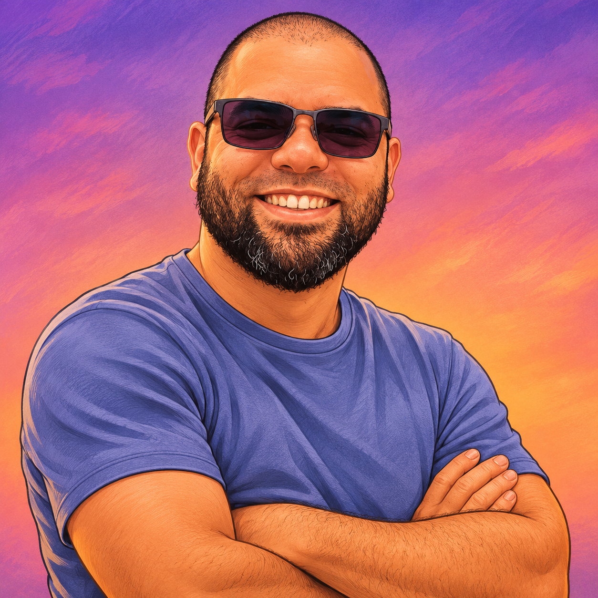
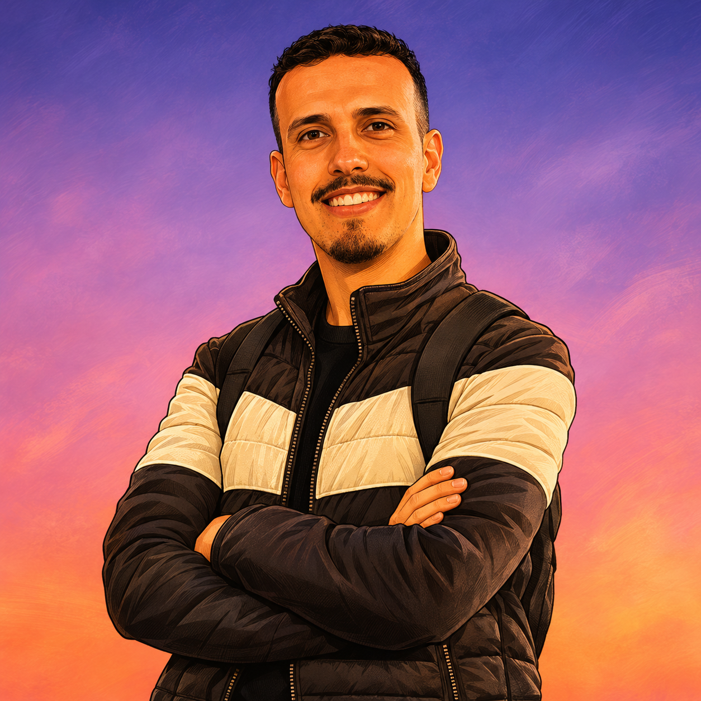

100% AMISTAD
0% CONTROL DE VERSIONES
0% CONTROL DE VERSIONES
↳ archivo histórico no autorizado · 2024—2026
GRUPITO.exe
Un grupo de amigos que se conoció programando y terminó compartiendo mucho más que errores de código.
Amistad, chismes, comida, relaciones, tecnología, debates absolutamente innecesarios y 162.722 mensajes de pruebas de que nadie aquí sabía en qué se estaba metiendo.
// casting no solicitado
Conocé al elenco
Los nueve que sostienen esta temporada del caos. Ahora sus expedientes incluyen más capas de personalidad, contradicciones, anécdotas reales y qué fuente tipográfica sería cada uno. Los otros tienen su propio archivo más abajo, como corresponde al canon.
No hay personajes con ese filtro. Ni siquiera GRUPITO tiene tantos.
// el multiverso tipográfico
Si cada uno fuera una fuente...
No hablamos de fuentes periodísticas; hablamos de tipografías. La asignación es una cargada amistosa, pero los nombres se renderizan con sus fuentes (si el navegador las tiene disponibles).
Nota: las ilustraciones son caricaturas simbólicas generadas para la web, no retratos físicos de los integrantes.
// git log --abandoned-cast
El archivo de los caídos 🕯️
No fallecieron, tranquilos. Simplemente pasaron por el universo de GRUPITO, dejaron unas cuantas líneas memorables y salieron del reparto. La producción los recuerda con cariño y un contrato de participación bastante breve.
* La clasificación es un recurso de humor para esta web: no pretende contar toda la historia personal de nadie.
// analítica absolutamente necesaria
Los números del descontrol
Tráfico de mensajes por temporada
Cuando estudiar programación parecía una excusa
99.5752024
41.4192025
21.7322026*
*2026 hasta el 23 de noviembre; cifras de entradas exportadas, incluidos cuatro mensajes no atribuibles a personas.
Frase fundacional
«Me gusta pelear.»
— Daniel Chacón, el 7 de febrero de 2024, pocos minutos después de que se creara el grupo.
No era una advertencia. Era la descripción del puesto.
// datos que nadie pidió pero todos necesitamos
¿Sabías que...?
// show us the receipts
Frases que prendieron fuego el chat 🔥
Cuando una frase parece una tontería pero diez mensajes después ya están discutiendo cosas que nadie pidió. Hay doble sentido, chistes de adultos y contexto que solo GRUPITO podría entender; las reacciones resumidas son interpretación editorial, las citas son textuales.
📌 Solo protagonistas actuales. Las frases de los participantes caídos quedan en su archivo, no en el juego.
// git log --group-names
Los nombres del grupo 📛
El nombre del grupo fue un calendario, un menú, una indirecta y en ocasiones una denuncia. El historial contiene su nombre original y 41 cambios con día y hora: acá están, sin direcciones privadas.
Las fechas son las de los registros de WhatsApp, no necesariamente las de cada juntada. Algunos nombres previos aparecen en eventos sin el cambio correspondiente; no se les inventaron fechas. No se registran cambios de nombre posteriores al 18/08/2025 en esta exportación.
// commit history del desastre
Los eventos del canon
// spin-offs románticos
Las parejas del multiverso
Relaciones corregidas por el mismísimo equipo de continuidad. Ceci y Bárbara no están en el grupo; Pipe sí. Y el novio de Chiara es un Daniel distinto de Daniel Chacón.
// protagonistas fuera del canal
Los que protagonizan sin escribir
No son NPC ni extras: son parte importante de las historias. Pero su voz llega filtrada por las anécdotas de quienes sí participan, por eso no les atribuimos frases ni rasgos que el chat no permita conocer.
// academia de premios inventados
Premios GRUPITO 🏆
Trofeos completamente arbitrarios, pero esta vez con expediente y explicación del porqué.
// minijuego de reputación grupal
¿Quién lo dijo?
Elegí al autor de cada mensaje: solo los nueve protagonistas. Incluimos frases de doble sentido, ocurrencias icónicas y contexto después de responder. Ningún participante caído aparece como respuesta.
RONDA 1 / 8
Cargando una barbaridad histórica...
Tu historial de impunidad
0 / 0
Si acertás todo, dejás de ser espectador y pasás a ser parte del problema.
Fuente: Comic Sans 🥴
Dato: «Fuente: Comic sans» es una frase real de Carlos, no de Daniel. El giro de guion que merecemos.
“
Un grupo de personas que empezó intentando resolver errores de programación y terminó descubriendo que los bugs más interesantes están en la convivencia humana.
GRUPITO.exe · estado: establemente inestable ♡